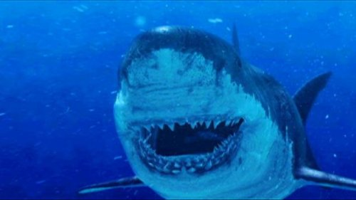
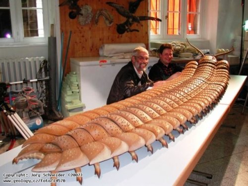
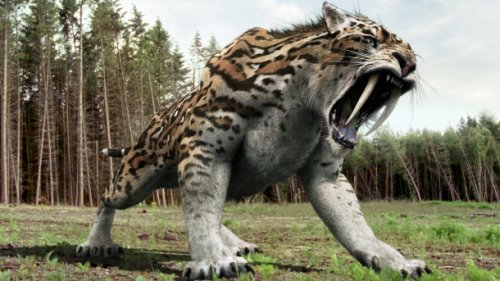

Мегалодон

Мегалодон, название которого переводится как «большой зуб», является вымершим видом гигантской акулы, который
обитал от 28 до 1,5 миллионов лет назад. Благодаря своей невероятной длине в 18 метров, он считается одним из
самых крупных и мощных хищников, которые когда-либо жили на Земле. Мегалодон обитал по всему миру и выглядел как
гораздо более крупная и ужасающая версия современной белой акулы.
Артроплевра

Артроплевра обитала на Земле в позднем каменноугольном периоде (340 - 280 миллионов лет назад) и была эндемиком
территории, которая сейчас является Северной Америкой и Шотландией. Она была самым крупным известным наземным
беспозвоночным видом. Несмотря на свою огромную длину до 2,7 метра и сделанные ранее выводы, Артроплевра не
была хищником, она была травоядным существом, которое питалось подгнивающими лесными растениями.
Смилодон

Смилодон, эндемичный Северной и Южной Америкам бродил по земле в эпоху Плейстоцена (2,5 миллиона – 10 000 лет назад).
Он является самым лучшим известным примером саблезубого тигра. Это был крепко сложенный хищник с особенно хорошо
развитыми передними конечностями и исключительно длинными и острыми верхними клыками. Самый крупный вид мог
весить до 408 килограммов.